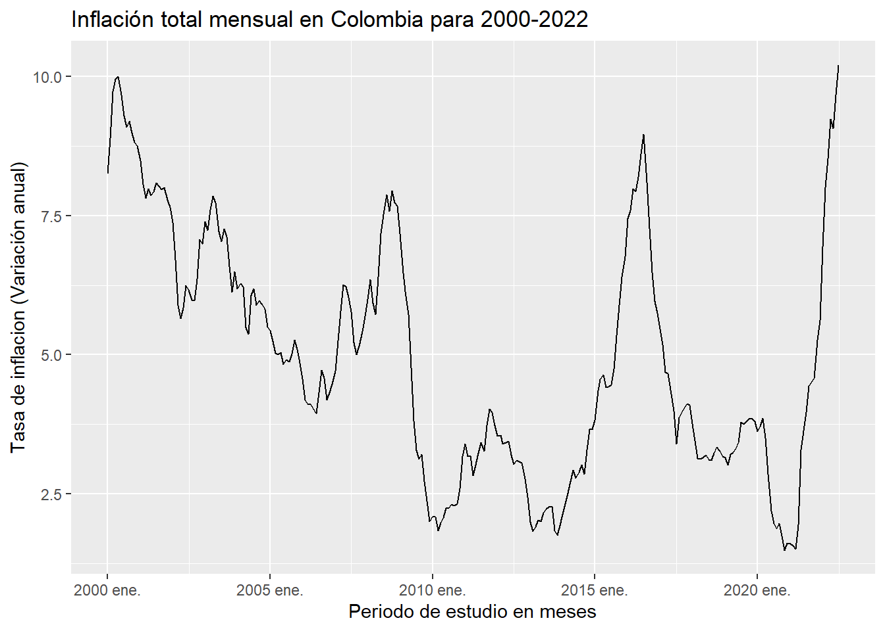

Series de tiempo univariadas: Análisis descriptivo
Inflación total de Colombia (Variación anual)
Introdución
En economía es habitual el interés sobre el ritmo al que los precios de los bienes y servicios de consumo cambian de un periodo a otro, tales cambios afectan el poder adquisitivo real de los ingresos de los consumidores y su bienestar. Debido a que no todos los precios de los distintos bienes y servicios cambian en la misma proporción, un índice de precios que sintetice los cambios en los precios en una canasta lo suficientemente general es el Índice de Precios al Consumidor (IPC).
Los IPC son estadísticas oficiales comúnmente producidas por las oficinas nacionales de estadística, los ministerios de trabajo o los bancos centrales, en Colombia la operación estadística está a cargo del Departamento Administrativo Nacional de Estadística (DANE). Cuando existe un aumento generalizado y sostenido de los precios de los bienes y servicios más representativos del consumo de los hogares de un país se dice que se experimenta inflación.
Esta tasa de cambio constituye un indicador general de la inflación total, por lo tanto, tiene un papel clave para la toma de decisiones en política monetaria, la definición de la variación en los salarios, el ajuste de estados financieros, la resolución de procesos jurídicos, para calcular la pérdida de poder adquisitivo de la moneda, como uno de los indicadores usados para estimar los equilibrios en partidas de Cuentas Nacionales y como factor de análisis del comportamiento coyuntural de la economía.
Para este estudio, el interés se centra en el análisis descriptivo de la inflación total mensual como variación anual, en otras palabras, el cambio porcentual de los precios al consumidor IPC de un mes (o periodo) frente al mismo periodo doce (12) meses antes. El periodo de análisis de los datos recopilados inicia desde el 31 de enero del 2000 hasta el 31 de julio de 2022, con 271 registros.
Ahora gráficamos la serie de tiempo para identificar posibles caracteristicas o patrones de comportamiento del fenómeno de la inflación.
El gráfico anterior permite apreciar la dinamica del comportamiento de la inflación total mensual medida como variación anual para Colombia en los periodos del 31 de enero de 2000 hasta el 31 de julio de 2022. Esta serie presenta tres periodos de tendencia decreciente, a saber, el periodo de aproximadamente seis años que comprende de mayo del 2000 hasta junio de 2006, donde la inflación decreció aproximadamente 6.1 puntos porcentuales de 10% a 3.9%, esto posiblemente asociado con una rapida recuperación de Colombia de la crisis de 1999 en donde el producto interno bruto decreció en 4% siendo el peor registro en la historia colombiana y uno de los mayores registros de inflación con 10% para los años inmediatamente posteriores. Por otro lado, el periodo que comprende entre octubre del 2008 hasta marzo de 2010, donde la inflación comparada contra el año inmediatamente anterior disminuyó 6.1 puntos porcentuales de un 7.93% a 1.83%, dado como resultado de la crisis financiera internacional y resultados positivos en el comercio interno que beneficiaron a país disminuyendo el impacto en la tasa representativa del mercado frente al dolar. El ultimo periodo de descenso abarca desde agosto de 2016 a febrero de 2019 el cual disminuyó un auge de inflación en aproximadamente 5.7 puntos porcentuales de 8.96% a 3.24%, asociado con el fin de negociaciones en un paro campesino de 2016 y la realización del acuerdo de paz entre grupos insurgentes que resultó en una mayor confianza inversionista y un crecimiento en la inversión extranjera a proyectos de largo aliento dentro del país.
Por otro lado, historicamente la inflación para estos periodos presenta 4 eventos que contribuyeron al aumento más que proporcional en rapidos periodos que se asocian con crisis economicas en 1999, crisis del mercado de capitales en 2008 a 2010, factores en las cadenas de producción y protestas sociales para 2016 y finalmente la pandemia de Sars-Cov-2 en 2020. Entre estos periodos podemos apreciar crecimiento en el nivel deprecios en los auges hasta una cima que estan acotadas por un valor maximo de 10.2% que se registró en julio de 2022.
Caracteristicas de la serie de inflación total
La serie presenta una
varianza marginalque varía a lo largo del tiempo, esto a razón de que la serie parece tener un rango de valores diferente a lo largo del tiempo iniciando en un registro de 8.5%, tomando su valor mínimo en 1.61% y retomando su valor final y maximo en el periodo de estudio en 10.2%. De esta serie se puede percibir que la volatilidad a lo largo del tiempo aumenta de manera monotona, en otras palabras el rango en donde fluctuan los valores aumenta mientras el tiempo transcurre. Por lo tanto, se podría decir que la varianza marginal de la serie no es independiente del tiempo, se suguiere trabajar con una transformación de potencia para estabilizar la varianza de la serie víaBox-Cox.A simple vista, la inflación en el periodo de estudio no cambia sus valores a lo largo del tiempo alrededor de un unico nivel, es decir, su valor promedio no es independiente del tiempo para el periodo de analisis de este estudio, por lo tanto presenta un componente
tendencial o nivel de la serie dependientedel periodo de tiempo. Asimismo, se puede apreciar el parecido de la serie con una caminata aleatoria que inicia en 8.24% de inflación.Existe presencia de una
componente cíclica (estacional o no estacional)que puede percibirse cada 30 y 54 meses lo cual puede dar luz sobre componentes de ciclos economicos largos en la serie, esto también puede implicar que la media del proceso no sea constante y que se enmascare en presencia de tendencia.
De acuerdo, a las caracteristicas que presenta la serie se procede a realizar la transformación Box-Cox, se suguiere transformarla serie con un valor de lamda equivalente a 0.812 de tal manera que la serie se estabilice en varianza a lo largo del tiempo. De la misma forma se puede comparar en cambio en escala de medidas de la serie con varianza estabilizada, el método utilizado fue la aproximación de Guerrero para llegar a este valor, sin embargo, los valores de la serie pierden interpretabilidad.
[1] 0.9918422Ademas, inmediatamente a la transformación de Box-Cox se realizan las estimaciones muestrales de las autocorrelaciones simples y parciales (FAS) y (FAP), en donde se puede observar que la FAS muestra un decaimiento lento que indica que la serie presenta tendencia que se consideró estocastica, sin embargo la serie no presenta un comportamiento repetitivo en una periodicidad a simple vista, luego no se puede afirmar que exista un componente estacional o periodico deterministico. Finalmente, se realiza sobre la serie transformada una busqueda de otro lamda de transfomación para asegurar que la transformación es apropiada y sugiere un lamda que asciende a 0.9918422, que es practicamente 1.
Análisis de tendencia o nivel de la serie
La inflación en el periodo de estudio no cambia sus valores a lo largo del tiempo alrededor de un unico nivel, es decir, su valor promedio no es independiente del tiempo para el periodo de analisis de este estudio, por lo tanto presenta un componente tendencial o nivel de la serie dependiente del periodo de tiempo.
Asimismo, se puede apreciar el parecido de la serie con una caminata aleatoria que inicia en 8.24% de inflación y que la tendencia existente en los registros no obedece a una funcion matematica exacta, luego se puede considerar una tendencia estocastica. Bajo un enfoque descriptivo se procede a contrastar la estimación de la tendencia vía estimación polinómica local (LOESS), a continuación, se presentan 4 gráficas que evidencian la estimación de la tendencia.
Se puede apreciar en la gráfica superior izquiera que la estimación de la tendencia que considera una ventana del 75% de los datos (aproximadamente 204 meses) señala la existencia de una tendencia decreciente en la primera decada del periodo de estudio, para posteriormente cambiar su pendiente y crecer lentamente durante la segunda decada de manera suave. Para la gráfica superior derecha, se puede evidenciar que la estimación de la tendencia que considera una ventana del 35% de los datos (aproximadamente 95 meses) dentro de las 2 decadas del estudio presentan periodos en donde la inflación alcanza un valle y posteriormente tiene un auge que en ambas decadas es cercano al 7%. Asimismo, la transición hacia la gráfica inferior izquierda muestra la estimación de la tendencia que considera una ventana del 20% de los datos (aproximadamente 204 meses) que presenta posibles ciclos de 2 a 3 años dentro de cada decada que pueden verse enmascarados por la tendencia pero que con una ventana de menos observaciones se puede sospechar de posibles ciclos no periodicos (no necesariamente de duración constante). Finalmente, en la gráfica inferior derecha se observa la estimación de la tendencia que considera una ventana del 8% de los datos (aproximadamente 24 meses) presenta posibles ciclos de 2,5 años dentro de cada decada que pueden verse enmascarados por la tendencia pero que con una ventana de menos observaciones se puede sospechar de posibles ciclos no periodicos
Sustracción de la tendencia estimada
Una vez estimada la tendencia a traves de una aproximación no parametrica por polinomios locales, se procede a eliminar la estimación de la serie con la varianza estabilizada. Es decir, una manera de asegurar que la tendencia estimada es la correcta se observa el resultado del valor real de la serie frente a su tendencia y finalmente este resultado no debe poseer tendencia. Este componente sin tendencia tiene un papel clave para identificar y determinar patrones, comportamientos y ciclos dentro de la serie que posiblemente se enmascaraban con la tendencia.
Warning: Removed 1 row containing missing values or values outside the scale range
(`geom_line()`).Las gráficas anteriores permiten contrastar el metodo de eliminación de tendencia por polinomios locales frente a la metodologia Box-Jenkins, con el objetivo de detectar estabilidad en el valor promedio y una varianza constante a lo largo del periodo de tiempo. Asimimo, se puede apreciar ambas metodologías producen una serie que estable en media pero que a simple vista no parece muy constante en varianza, es decir, ambas series presentan una volatilidad que subjetivamente generan dudas sobre la estacionariedad de la serie, esto puede ser generado por un componente estacional o ciclio que no es capturado por la tendencia vía LOESS o diferenciando la serie.
Análisis de estacionalidad
Mediante la suposición clasica de un modelo aditivo vemos presencia de tendencia, pero no se identifica un componente estacional que contraste a simple vista. Por otro lado, se realiza una busqueda de componentes que muestren estacionalidad usando medidas descriptivas como herramientas para detección de este fenomeno en distintos periodos del tiempo. En primera instancia, se realiza un gráfico de suberies para enfatizar los patrones estacionales es aquel en el que los datos de cada estación se recogen juntos en mini gráficos temporales separados.
Las líneas azules horizontales indican las medias de cada mes, se puede observar que no existen medias que se ubiquen en valores extremos. Este tipo de gráfico permite ver claramente el patrón estacional subyacente y también muestra los cambios en la estacionalidad a lo largo del tiempo, en este caso no se evidencia a simple vista un componente estacional. En este ejemplo, el gráfico no es especialmente revelador.
Un gráfico para promedios agrupando por meses…
Un gráfico para promedios agrupando por meses y desv
Exploración de multiples estacionalidades (ciclos estacionales?)
'data.frame': 271 obs. of 2 variables:
$ infla: num -0.901 -0.423 0.173 0.372 0.455 ...
$ Fecha: Date, format: "2000-01-31" "2000-02-29" ...[1] "tbl_df" "tbl" "data.frame"De manera individual…
Puede usar el argumento period=12 y da el mismo resultado, lo que significa es que se pueden agrupar las observaciones que están cada 12.
Gráficos de densidades para explorar la estacionalidad.
A
Don't know how to automatically pick scale for object of type <ts>. Defaulting
to continuous.Don't know how to automatically pick scale for object of type <ts>. Defaulting
to continuous.No parece haber patrón estacional en la serie, puesto que las funciones de densidad estan superpuestas entre si y por tanto los valores medios de la inflación parecen tener valores que no depende del mes. Por otro lado, podemos observar que el comportamiento en varianza tampoco es estacional.
Ahora repetimos el procedimiento pero eliminando previamente la tendencia de la serie Inflación
Para este gráfico observamos que las colas de las densidades de distribución estimadas son mas cortas.
Pueden hacer lo mismo pero en vez de quitar la tendencia, hacemos una diferenciación
Ahora un gráfico de lineas
Procedemos a extraer las subseries por años. Para identificar posibles comportamientos que permitan describir el comportamiento de la Inflación
Análisis de Rezagos
Diagrama de dispersión de las observaciones originales con sus respectivos retardos…
A color
Observando la figura enterior de concluye que las relaciones de la variable original con los primeros 4 resagos presenta son fuertes y positivas (\(\rho> 0.8\)) y para los resagos más lejanos ttata… lo que significa que los valores inmediados anteriores afectan de manera directo y fenoméno con memoria
Tomando cuatrenios (Rezagos estacionales) (por rehacer)
Análisis del ACF y AMI muestral
Versión interractiva:
Por otro lado para el AMI

Análisis de Ciclos y Estacionalidades
Del gráfico vemos que el flujo de calor de la Inflación para Colombia ocurre de manera vertical indicando la dispocición del ciclo. En color oscuro se marca los los picos de dicho ciclo. Además esto podría sugerir que el comportamiento de tal ciclo no es estacional.
Análisis de ciclos y estacionalidad utilizando el periodograma:
Para detectar el componente de estacionalidad y de ciclicidad se hará uso del periodograma:…
Con el formato formato base
Con el formato mvspec
[1] "El valor de la frecuencia donde se máximiza el periodograma para z1 es: 0.541666666666667"[1] "El valor de la frecuencia donde se alcanza el segundo máximo para el periodograma para REC es: 0.375"[1] "El valor de la frecuencia donde se alcanza el tercer máximo para el periodograma para REC es: 0.75"###residuos dos
Métodos de predicción
Metodología de suavizamiento exponencial
Warning: `data_frame()` was deprecated in tibble 1.1.0.
ℹ Please use `tibble()` instead. ME RMSE MAE MPE MAPE MASE
Training set 0.09006216 0.8090687 0.599161 -3.039447 28.14596 0.5910791
Test set -4.43578479 5.4735750 4.860388 -314.839799 322.85061 4.7948270
ACF1 Theil's U
Training set 0.9467384 NA
Test set 0.9764721 27.37423 ME RMSE MAE MPE MAPE MASE
Training set -0.0869448 0.6762059 0.5202551 -9.475969 23.57609 0.5132375
Test set -0.1857017 1.6579692 1.4010652 -60.886943 83.40865 1.3821665
ACF1 Theil's U
Training set 0.9232893 NA
Test set 0.9415096 7.300588Modelo con todo menos 5
z3_com <- window(z3, end = c(2022,2))
z3_r<-window(z3, start = c(2022,3))
hw.expo_com <- ets(z3_com, "AAN",damped = T)
holt.com <- forecast(hw.expo_com, h = 5)
sprintf("El RMSE para el modelo de Holt con damped es de %f ", accuracy(holt.com, z3_r)[2,2])[1] "El RMSE para el modelo de Holt con damped es de 0.388826 "p<-hw.expo_com %>%
forecast(h = 5) %>%
autoplot()+ autolayer(z3_r)+
labs(title = "Australian food expenditure",
y = "$ (billions)")
pcheckresiduals(hw.expo_com)
Ljung-Box test
data: Residuals from ETS(A,Ad,N)
Q* = 68.526, df = 24, p-value = 3.647e-06
Model df: 0. Total lags used: 24##Z1 Y Z3 SON LA SERIE VARIANZA ESTABILIZADA Y OBJETO TS
##Z2 ES LA SERIE SIN TENDENCIA
##tsibble_infla1[,"infdif"] ES LA SERIE PERO SIN INDICES